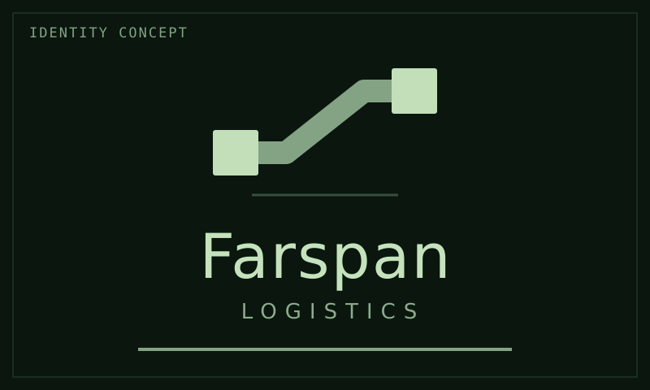
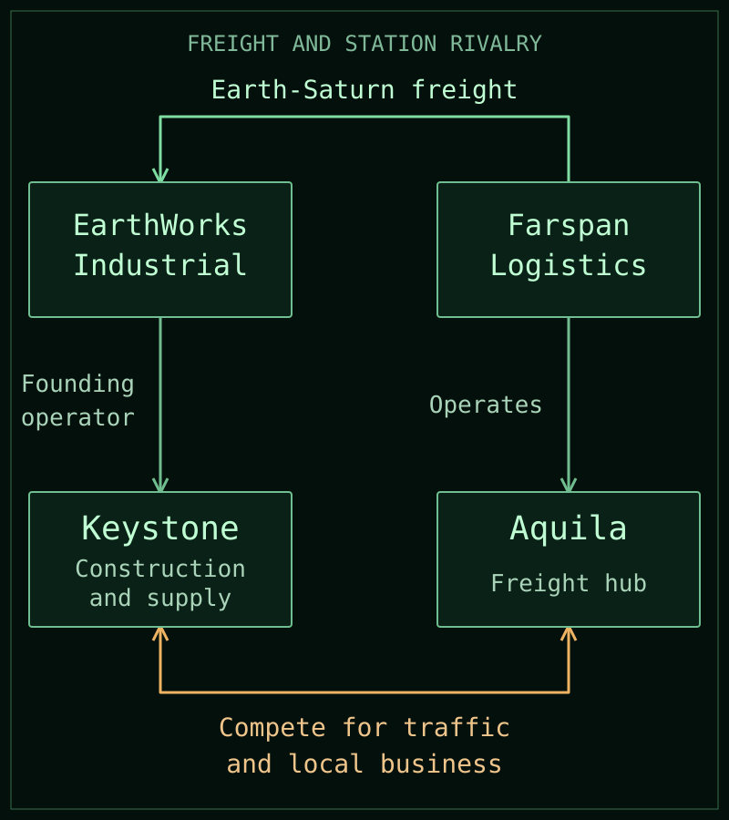

Lore / Farspan Logistics
Farspan Logistics
 | |
| Emblem and wordmark proposal in encyclopedia colors. Not established branding. | |
| Short name | Farspan |
|---|---|
| Type | Freight carrier and station operator |
| Transport role | Earth-Saturn freight |
| Saturn base | Aquila |
| EarthWorks relationship | Freight supplier and competitor |
| Market position | One of several outside carriers |
{kind=link}
Farspan Logistics, commonly called Farspan, is a long-haul freight carrier and station operator in Saturn's developing settlement network. It supplies Earth-Saturn freight services to EarthWorks Industrial while operating Aquila, a newer freight-hub town that competes with Keystone.
The company combines transport services with its own station operations. Its relationship with EarthWorks involves both commercial dependence and competition, rather than a simple division between allies and rivals.
Freight and station operations
Farspan operates Aquila, one of the network's major station towns, established after Keystone. This is its own freight hub, not merely leased facilities within another operator's station. The town is a home as well as a working port, within the wider settlement model of rotating residential sections.
Aquila competes with Keystone for traffic and local business. It is not a compulsory gateway for other ships entering the settlement network. Neither the station nor Farspan's freight role gives the company an absolute monopoly.
Relationship with EarthWorks
EarthWorks handles local construction and supply but relies heavily on outside carriers for Earth-Saturn freight. Farspan is one of those suppliers, not its sole carrier. Available transport capacity and commercial priorities give carriers leverage over EarthWorks' delivery schedules and expansion plans.
At the same time, Aquila competes with Keystone's businesses and settlement operations. Supplying freight to EarthWorks does not remove that competition. Rivalry does not make Farspan benevolent or establish a permanent alliance with anyone opposing EarthWorks.
The companies operate within the wider system of law and power, including Earth law, public oversight, and the distinction between company security and state military power.
{kind=link}

Names and ships
Farspan names its ships after navigational stars and its stations after constellations. The tradition connects its freight business to the navigation of long passages.
Altair is a large Earth-Saturn carrier whose regular Saturn port is Aquila. Altair is the brightest star in that constellation. This pairing does not require every ship to match its regular port's constellation or remain there between journeys.
Details still open
Aquila's exact orbit, population, layout, and local administrative arrangements remain open.
The company's earlier history, headquarters, leadership, fleet composition, service schedules, particular contracts, and precise property holdings have not yet been established.